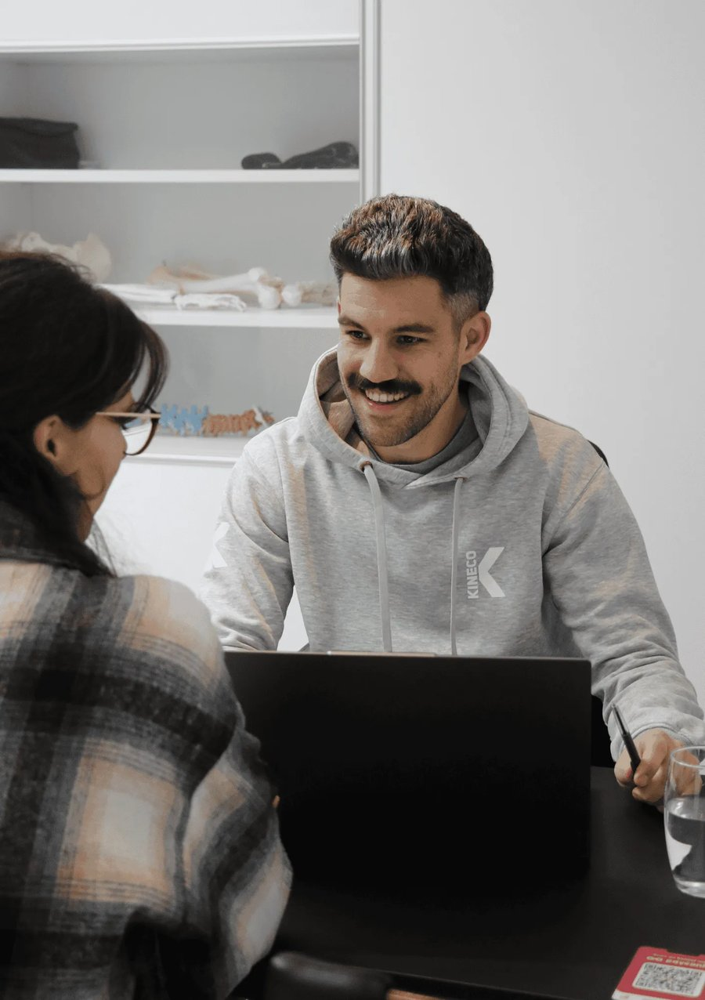

Voedingscoaching die stap voor stap werkt: één focuspunt per keer, nooit alles tegelijk. Of je nu wil afvallen, gezonder wil leven of sportprestaties wil verbeteren — dezelfde aanpak, gebouwd om te blijven hangen.

Ik ben Pieter-Jan, papa van twee, en ooit was ik het tegenovergestelde van wie ik nu ben. Na mijn tijd als handballer viel het sporten weg — het werk nam over, en met stress kwamen ook de gewoontes die niet hielpen. Op een bepaald moment voelde ik me gewoon niet meer goed in mijn vel.
Ik ben toen zelf beginnen bijsturen: eerst voeding, dan bewegen, stap voor stap. Wat begon als lopen groeide uit tot triatlon, ultralopen en crossfit. In 2023 besefte ik dat ik dit ook voor anderen wilde doen, en volgde ik de opleiding voedingsdeskundige aan het Centrum voor Avondonderwijs — diploma op zak in 2024.
Die geschiedenis is precies waarom ik nu met vaste trajecten werk: ik weet uit ervaring dat blijvende verandering nooit in één keer lukt. Wel stap voor stap, volgehouden, sessie na sessie — zonder strenge regels of schuldgevoel bij een pakje friet.
Bekijk hoe een traject eruitziet →Een gesprek waarin ik jouw doelen, ritme en obstakels in kaart breng — zonder meteen te sturen of te adviseren.
Je gaat naar huis met exact één simpele oefening. Geen huiswerkpakket, gewoon observeren.
Uit de oefening halen we samen actiepunten. Elke sessie werken we aan precies één aanpassing.
We bouwen door tot je nieuwe gewoontes je nieuwe normaal zijn — dan evalueren we samen en bekijken we de volgende stap.
Voor wie gezonder wil eten of grip wil op gewicht — zonder sportjargon, zonder strenge regels.
Voeding rond training en wedstrijd, afgestemd op jouw kalender — vanuit mijn eigen ervaring als duursporter.
Het standaardtraject waarmee elke klant start. Volledig vooraf betaald bij de intake, geen losse facturen per sessie.
Voor wie meteen voor een langer traject kiest, of na de Kickstart verder wil bouwen.
"Toegankelijke coach. Bekijkt hoe je stap per stap aan een nieuw eetpatroon kan werken. Geen klassieke dieetregels maar op maat van je noden."
"Ben heel blij dat ik Pieter-Jan ben tegengekomen in de voorbereiding van mijn eerste Ironman. Hij brengt helder advies qua voeding, waardoor ik meer energie heb tijdens en na de trainingen."
"PJ hielp mij niet enkel met het klaarstomen van mijn summer-body, maar gaf mij ook een betere, gezondere eetgewoonte mee. Leuk om te weten dat je niet alles moet laten en toch gezond kan zijn!"